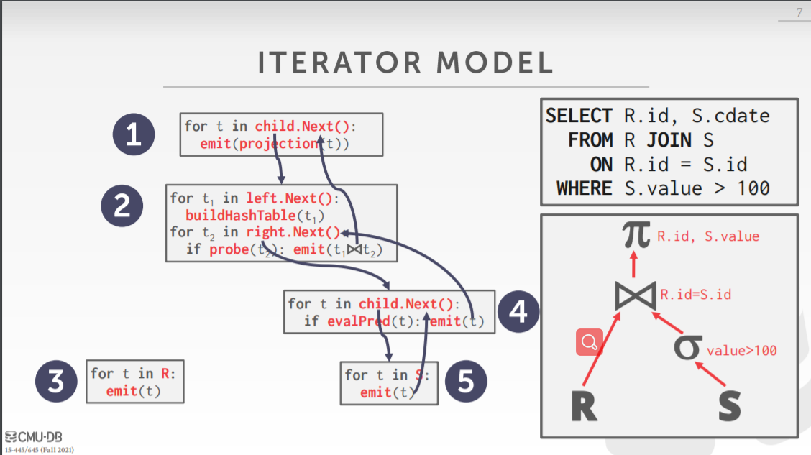

[CMU15445]:查询处理1
Query Plan
查询计划指的是一系列查询操作的序列，通常使用一棵树来表示
查询过程中的输入从叶子节点开始，沿着路径向上，在进入每层时会进行各种运算，最终在根节点产生输出结果
下面顺便介绍一些查询树中会出现的一些算子的含义
连接运算
该运算之前有所介绍，代表着连接运算，右下角的下标给出了连接的表以及属性
投影(Projection)运算
该运算用来过滤输出结果，右下角的下标表明了最终产生的关系中会出现的属性
选择运算

该运算对应着Sql语句中的where子句，其下标表明了选择的条件
Processing Model
处理模型决定了DBMS怎样去执行一条查询计划，比如操作的执行顺序以及数据是怎样在各个操作之间进行传输的
下面介绍几种常见的处理模型
Inerator Model
该模型也被称为Pipeling Model, 即流水线模型，是数据库中最常用的处理模型
在该模型中，一个运算的结果会被传递给下一个运算，这延长了同一条数据在内存中的存在时间，提高了查询执行的效率
该模型中一个重要的函数被称为Next(),下面给出一个简单的图例
可以看出，沿着根节点自上而下，每个内部节点需要实现获取到其子节点处理后的tuple，然后再执行自己的运算，迭代到最后，即到达了叶子节点，叶子节点就会扫描整个表, 一个个地返回tuple
下面给出流程关系图

Pipeline Breaker
在流水线执行过程中，有些运算必须得等到他们的孩子输出所有的tuple, 这些运算被称为阻塞运算，如Join,GroupBY,Subqueries等等
Materlalization Model
该模型被称为物化模型，每次运算执行的结果，都会被**物化(Materlized)**到一个临时的关系中以备后用，这些临时关系必须被写回磁盘
该模型与Iterator Model最大的区别在于，每个运算会一次性将所有的tuple全部输出，比如如果要选择value > 100的tuple,那么他就
会将value > 100的所有tuple全部输出，而不是像Iterator Model那样每输出一条tuple就要向子节点索要一条tuple
该方法的问题是某个操作可能会产生过量输出，即输出了一些上层节点所不需要的数据，为了避免这点，上层节点可以向下层节点传递一些限制信息，如Limit
如图所示，在该模型中使用Output()API来输出所有tuple
适用情况
该方法对于OLTP来说很棒，OLTP意味着小而多的操作，如果这些数据全部在内存当中，并且使用
Iteartor Model的话，那么多次迭代执行next()函数就需要比较大的开销，因为每次执行next()需要加锁如果使用该模型，就可以一次向将所有数据传输到内存并读取，不需要进行多次迭代
相反，该方法则不适用与OLAP,因为在各个操作之间传递巨量数据非常耗时
Vectorization Model
该模型是对Iterator Model的增强版，其内部也实现了Next()函数，但是不再是一次性传递一个tuple了，而是一次性传递多个tuple
其中这个tuple的数量可以根据系统自行调整，这也是当前业界主流的执行模型
Access Methods
访问方法指的是DBMS是怎样获取存储在table中的数据的，通常情况下，数据要么是从表中直接获取，要么是使用循序扫描从索引中获取
Sequential Scan
循序扫描即遍历table的所有page上面的所有tuple, 无疑是最差的一种方案，但是使用一些优化方案来加快访问速度
Prefetching
在取出一个page时顺便取出接下来的几个page
Buffer Pool ByPass
在扫描操作取出page的时候并不将page放进缓冲池，而是将其单独放入一个小的内存空间，避免污染缓冲池，这种方法适用于循序扫描，因为循序扫描过程中的page只使用一次，放入buffer pool也没有用
Parallelization
并行地对table进行读取Zone Map
该技术会为每个page创建一个Zone Map,记录着该page的一些聚合量
这样，当执行扫描操作时，可以首先查看当前page的Zone Map, 然后再判断要不要扫描该page
如当需要获取最大值的时候，如果没有Zone Map,就需要扫描整个page, 找到其中的最大值，如果提前维护了聚合量的话，就没有必
要进行扫描了
该技术如今正在被广泛使用
Late Materialization
该技术的基本思想是尽量延迟真正传输数据的时机，在上层需要数据的时候，可以仅传递一些必要数据，如RID, 数据在列中的偏移量
在上面这个例子中，在执行选择操作(a > 100)时，可以仅传递a > 100的tuple在列中的偏移量，在执行根节点时会发现，根本不需要a列的数据，这样做无疑节省了开销
Heap Culsting
如果需要的属性在聚簇索引中出现，就可以直接通过索引来访问
Index Scan
如果查询计划中的某些属性出现在索引当中，那么就可以借助索引来获取表中的数据
由于查询条件的不同，有时有多个索引可以选择
在上面这个索引当中，就有dept 以及 age两种索引可以选择，根据不同的情况选择最优的索引
使用索引的方式
就拿最常见的B+树索引来说，如果查询计划中进行的是点查询，那么很显然就应该从树顶沿着路径向下查询
如果是范围查询，那么就应该从最左边的叶子节点开始进行遍历
Multi Index Scan
在上面的例子中，由于有两个选择条件，我们也可以同时使用两个索引，然后对它们的结果取交集
如果给定的选择条件是AND的话就应该求交集，如果给定条件是OR的话就应该求并集
Expression Evaluation
在SQL中可以出现一些表达式，如Where B.value = A.value + 1, 对于DBMS来说，会将其解释成一棵表达式树
DBMS会维护一些元数据，比如当前的tuple等等以便使得表达式树能够正确执行
如果想要评测表达式树的执行效率的话会比较慢，因为需要遍历整个树，才能够知道真正想要做的操作是什么，更好的方法是直接进行计算
本博客所有文章除特别声明外，均采用 CC BY-SA 4.0 协议 ，转载请注明出处！